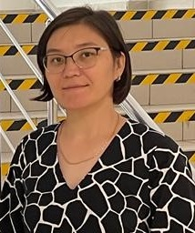

Құрастырушылар
Құрастырушылар
туралы мәлімет
Исакова Сабира Сагынбековна –
филология ғылымдарының докторы, профессор. 1972 жылы туған. 1990-1995 жылдары
Қазақ мемлекеттік халықаралық қатынастар және әлем тілдері университетінің
француз факультетінде француз және орыс тілдері мамандығы бойынша білім алған.
1994-1995 жылдары Францияның Рен 2 университетінде тілдік тәлімгерліктен өткен.
1995-2002 жылдары Қазақ мемлекеттік халықаралық қатынастар және әлем тілдері
университетінде оқытушылық қызмет атқарған. 1996-1998 жылдары аталған
университеттің аспирантурасында білім алған. 2000 жылы «Қазақ тіліндегі
психология терминдері» тақырыбында кандидаттық диссертация қорғаған. 2004 жылы
«Тіл білімі» бойынша доцент ғылыми атағын алған. 2008 жылы «Қазақ
терминтанымының когнитивтік-прагматикалық аспектісі» тақырыбында докторлық
диссертация қорғаған. 2022 жылы «Тіл білімі» мамандығы бойынша профессор ғылыми
атағын алған. 2010 жылдан бастап Қ.Жұбанов атындағы Ақтөбе өңірлік мемлекеттік
университетінің теориялық және қолданбалы тіл білімі кафедрасының профессоры
қызметін атқарады. Қазақстан Республикасы Білім және Ғылым Министрлігінің Мақтау
грамотасымен марапатталған (2009
ж). 2012 жылдан бастап Ресейдің лингвист-когнитологтар ассоциациясының
мүшесі. Қазақстан Республикасы
Білім және Ғылым Министрлігінің «2013 жылдың ЖОО-ның Үздік оқытушысы»
мемлекеттік грантының иегері.
Гуманитарлық ғылымдар саласындағы үздiк ғылыми зерттеуі үшiн Ш.Ш. Уәлиханов
атындағы сыйлықтың иегері (2023 ж.). Ғылыми бағыттары – лексикология,
терминология, салыстырмалы, салғастырмалы тіл білімі, когнитивтік тіл білімі,
лингвомәдениеттану, дискурс, қазақ терминтанымының когнитивтік-прагматикалық
аспектісі. 90-нан астам еңбектің, оның ішінде 3 монография, 5 оқу құралы, 3 электронды оқулықтың, 3
сөздіктің авторы. Ғылыми еңбектері шетелдік WoS (3) және
Scopus (9) базаларында жарыққа шыққан. Scopus h-5, WoS h-1.
Scopus
Author ID:
57205124297
ORCID
ID:
0000-0003-2986-8885
Researcher ID: AFP-3044-2022
Култанбаева Нургуль
Калдыгуловна – философия
докторы (PhD), аға оқытушы. 1976 жылы туған. 1994-1998
жылдары Батыс Қазақстан гуманитарлық университетінің филология факультетінде
қазақ тілі мен әдебиеті, араб тілі мұғалімі мамандығы бойынша білім алған.
2011-2013 жылдары С. Байешов атындағы Ақтөбе университетінде «6М020500» -
Филология мамандығы бойынша магистратураны тәмамдаған. 2018-2021
жылдары Қ.Жұбанов атындағы Ақтөбе өңірлік университетінің «6D020500-Филология»
мамандығы бойынша докторантурада оқып, «Ертегі дискурсының лингвомәдени
өлшемдері (қазақ, орыс және араб тілдері материалдары негізінде)» тақырыбында
философия докторы (PhD) дәрежесін
алу үшін диссертация қорғаған. 2002 жылдан бастап Қ.Жұбанов атындағы Ақтөбе
өңірлік университетінде «Теориялық және қолданбалы тіл білімі» кафедрасында аға
оқытушы болып қызмет жасайды.
Ғылыми бағыттары: салғастырмалы тіл
білімі, когнитивтік тіл білімі,
лингвомәдениеттану, дискурсология.
30-дан астам ғылыми-әдістемелік мақалалары, оның ішінде 2 оқу құралы, 1 электронды
оқулықтың авторы. Scopus
деректер базасына енгізілген импакт-факторы бар журналдарда 3 мақаласы жарық
көрген, h-1 бар.
Scopus
Author ID:
57224121067
ORCID ID: 0000000346096135
Тухтарова
Акмарал Сердалиевна
– магистр гуманитарных наук, преподаватель. Родилась 24 мая 1990 года. В
2007-2011 гг. обучалась по специальности «050207 – Переводческое дело» на
факультете иностранных языков
Актюбинского государственного университета им. К.Жубанова. В 2011-2013
гг. работала в должности лаборанта кафедры «Германская филология» Актюбинского
государственного университета им. К.Жубанова. В 2013-2015 гг. обучалась в
Институте полиязычного образования Казахского национального педагогического
университета имени Абая по специальности «6М020700 – Переводческое дело». В 2015
году защитила магистерскую диссертацию на тему «Лингвокультурологические аспекты
при переводе художественных произведений (на материале романа Стефани Майер
«Сумерки»). В 2014-2015 гг. работала в должности преподавателя кафедры
«Журналистика и переводческое дело» в университете «Туран». В марте 2014 года
была награждена Почетной грамотой Президиума Малой Академии Наук Республики
Казахстан за успешную и плодотворную работу с одаренной молодежью Казахстана. В
период с 10 по 19 ноября 2014 года обучалась на курсах повышения квалификации в
Американском Университете Гирне (Турецкая Республика Северного Кипра), а с 19
января по 19 мая 2015 года – в «Школе молодого преподавателя» университета
«Туран» (г. Алматы). В период с 29 мая по 24 июня 2017 года проходила курсы
повышения квалификации в Республиканском институте повышения квалификации
работников системы образования РК «Өрлеу» в г. Алматы. С 2015 года по настоящее
время работает на кафедре «Иностранная филология и переводческое дело»
Актюбинского регионального университета им. К.Жубанова в должности
преподавателя. В 2020-2023 гг. обучалась по направлению образовательной
программы PhD докторантуры «8D02304 – Филология» в Актюбинском региональном
университете им. К.Жубанова. В
период с 06 апреля по 06 мая 2022 года проходила научную стажировку в Башкирском
государственном университете (Россия, г. Уфа). Имеется более 20 научных
публикаций, в том числе в изданиях базы данных Scopus (3), h - 1 и в журналах, рекомендованных КОКСНВО
МНВО РК. Кроме того, имеются международные сертификаты «Teaching Knowledge
Test», «IELTs» и «Duolingo English Test», подтверждающие высокий уровень
владения английским языком. Основные научные направления: лингвокультурология,
когнитивная лингвистика, сравнительное языкознание, аудиовизуальный перевод,
художественный перевод.
Scopus
Author ID:
57291730600
ORCID ID: 0000-0003-3018-2004
Қартжан Нарқозы
Есенгелдіұлы – гуманитарлық ғылымдар магистрі. 1995 жылы туған.
2013-2017 жылдары Қ.Жұбанов атындағы Ақтөбе өңірлік мемлекеттік университетінде
шетел филологиясы мамандығы бойынша білім алған. 2017-2019 жылы сол
университетте филология мамандығы бойынша магистратура аяқтады. 2018 жылдың
көктемгі семестрінде Түркия елінің Сакарья университетінде академиялық
мобильділікпен оқыды. 2019 жылдың көктемінде Абай атындағы Қазақ Ұлттық
педагогикалық университетінде тағылымдамадан өтті. 2020 жылы Қ.Жұбанов атындағы
Ақтөбе өңірлік университетінде филология білім бағдарламасы бойынша
докторантураны тәмәмдады. 2022 жылы Ресейдің Уфа қаласында ғылыми тағылымдамадан
өтті. Қазір Жұбанов университетінің әлеуметтік мәселелер және жастар саясаты
департаментінің директоры, ғылыми жобаның кіші ғылыми қызметкері. Ғылыми
бағыттары – лексикология, салыстырмалы-салғастырмалы тіл білімі. 10-нан астам
ғылыми мақаланың, оның ішінде Скопус базасында 1 мақаланың
авторы.
Scopus
Author ID:
58819877000
ORCID ID: 0000-0001-6523-3655
 Жетесова Жанар
Алмасовна – педагогика және психология магистрі. 1983 жылы туған.
2000-2004
жылдары Абай атындағы Қазақ Ұлттық Педагогикалық университетінің филология
факультетінде неміс және ағылшын тілдері мұғалімі мамандығы бойынша білім алған.
2004-2006 жылдары аталмыш оқу орнында педагогика және психология мамандығы
бойынша магистратурада білім алған. Қазіргі таңда Қ.Жұбанов атындағы Ақтөбе
өңірлік университетінде «Филология» білім бағдарламасы бойынша 2 курс
докторанты. 2006 жылдан бастап Қ.Жұбанов атындағы Ақтөбе өңірлік мемлекеттік
университетінің шетел филологиясы және аударма ісі кафедрасында оқытушылық
қызмет атқаруда. Ғылыми зерттеу тақырыбы – анималистік лексиканың лингвомәдени
және когнитивті-салғастырмалы сипаты. 60-тан астам мақаланың,
оның ішінде Скопус базасында 1 мақала, 5 әдістемелік көмекші құралдың авторы.
Scopus
Author ID:
58820120100
ORCID ID: 0000-0002-7594-1695
Ермекбаева Гульмира Габитовна
– педагогика ғылымдарының кандидаты (РФ). 1986 жылы туған. 2003-2007 жылдары
Ақтөбе қаласындағы С.Бәйішев атындағы университеттің педагогика факультетінде
қазақ тілі мен әдебиеті мамандығы бойынша білім алған. 2007-2011 жылдары Ақтөбе
қаласындағы дарынды жасөспірімдерге арналған қазақ-түрік лицейінде, Ақтөбе
қаласындағы «Достық», «Сана» білім беру орталықтарында, «Шаңырақ» жеке
мектебінде қазақ тілі мен әдебиеті пәні мұғалімі қызметін атқарған.
2009-2011 жылдары С.Бәйішев атындағы Ақтөбе университетінің магистратурасында
білім алды. Магистратураны тәмамдаған соң аталған университетте оқытушылық
қызмет атқарған. 2016-2019 жылдары Башқұрт мемлекеттік педагогикалық
университетінде 44.06.01
Білім және педагогикалық ғылымдар бағытында аспирантурасын аяқтап,
«оқытушы-зерттеуші» біліктілігін алған. 2021 жылы Татарстан Республикасы, Қазан
қаласындағы Қазан федералды университетінде 13.00.02 - «Оқытудың теориясы,
әдістемесі және тәрбиелеу» (педагогикалық ғылымдар) мамандығы бойынша
«Орыс
тілді оқушыларды қазақ тілін Қазақстан Республикасы мемлекеттік тілі ретінде
оқытудағы интерактивті-модульдік технология (6-11-сыныптар материалында)» атты
кандидаттық диссертация қорғаған. 2022 жылдан бастап Қ.Жұбанов
атындағы Ақтөбе өңірлік мемлекеттік университетінің теориялық және қолданбалы
тіл білімі кафедрасының оқытушысы қызметін атқарады. Ғылыми бағыттары – тіл
білімі, қазақ тілін оқыту әдістемесі. 2023
жылдың 21 сәуірінде ҰҚК шешімімен «Білім
және ғылым»
басым бағыты бойынша 2023-2025 жылдарға арналған «Жас
ғалым»
жобасы негізінде ұсынған ЖТН АР19174913 «Қазақстан
Республикасының өңірлік жоғары оқу орнында болашақ педагогтерді оқытудың
зерттеушілік моделін (RBL) енгізу»
атты зерттеуі гранттық қаржыландыруға ие болды. 40-тан
астам ғылыми мақалалардың авторы, сонымен қатар «Атамұра» баспасынан шыққан
жалпы
білім беретін орыс мектебінің 7-8,
11-класс оқулықтары мен оқыту әдістемелерінің авторы (қос
авторлықта).
ORCID ID: 0000-0001-5497-1062
Танатова Роза
Көбенқызы - оқытушы. 1968 жылы туған. 1985-1990 жылдары Т.Г.Шевченко
атындағы Орск мемлекеттік педагогикалық институтының филология факультетінде
ұлттық мектептердегі орыс тілі мен әдебиеті мамандығы бойынша білім алған.
Ғылыми-педагогикалық өтілі - 19 жыл. 2004 жылы Ақтөбе мемлекеттік пеадгогикалық
институты, 2013 жылдан бастап Қ.Жұбанов атындағы Ақтөбе өңірлік университетінің
орыс филологиясы және мәдениетаралық коммуникация кафедрасының оқытушысы. Білім
беру қызметкерлері кәсіподағы Ақтөбе облыстық филиалының Алғыс хатымен (2018
жыл) , Ақтөбе облыстық ғылыми-практикалық орталығының алғыс хатымен (2022 жыл)
марапатталған.
Ғылыми
ізденіс тақырыбы - тілдерді оқытуда инновациялық технологияларды қолдану,
лексикология,
терминология, салыстырмалы, салғастырмалы тіл білімі.
ORCID
ID:
0000-0003-4142-3547